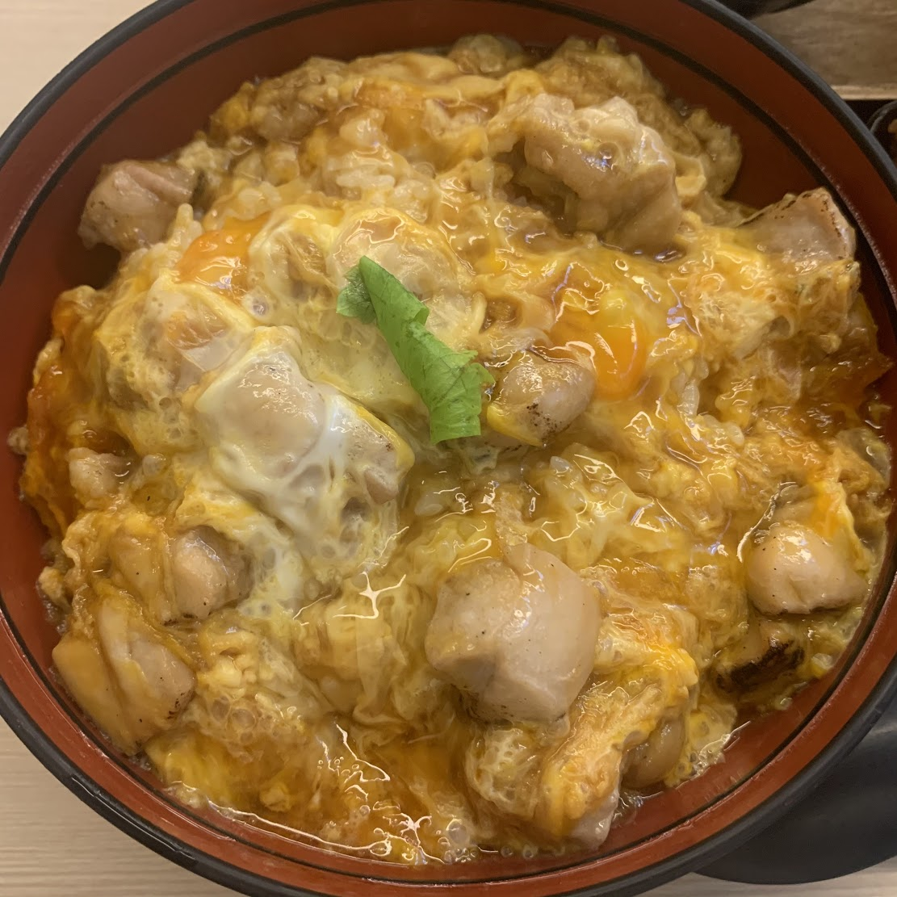

Oyakodon (Japanese Chicken and Egg Rice Bowl)

What is Oyakodon?
Oyakodon, literally "parent-and-child donburi", is a donburi, or Japanese rice bowl dish, in which chicken, egg, sliced scallion, and other ingredients are all simmered together in a kind of soup that is made with soy sauce and stock, and then served on top of a large bowl of rice.
Ingredients
- 1 tablespoon of olive oil
- 4 skinless chicken thighs or chicken breasts
- 1 onion, cut in half and sliced
- 2 cups dashi stock, can be substituted with chicken stock
- 1/4 cup soy sauce
- 3 tablespoons of mirin aka Japanese rice wine
- 3 tablespoons brown sugar
- 4 large eggs
- 4 cups hot cooked white rice
Steps
- Heat oil in a large skillet over medium heat. Add chicken and cook until beginning to brown, about 5 minutes. Add onion; cook and stir until onion is translucent, about 5 minutes.
- Pour in stock, then whisk in soy sauce, mirin, and brown sugar; stir until sugar dissolves. Bring to a boil, then lower heat and simmer until slightly reduced, about 10 minutes.
- Whisk eggs in a bowl until well-beaten, then pour into the hot stock mixture. Cover the skillet, reduce the heat, and steam until egg is cooked, about 5 minutes. Remove from the heat.
- Divide rice among 4 deep soup bowls and top with equal amounts of the soup mixture.